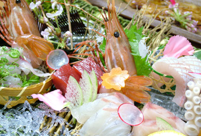
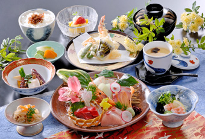
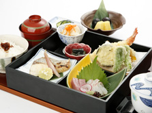
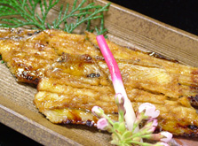
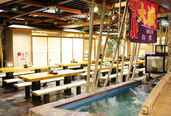

SHOP INFORMATION瀬戸内海鮮料理 白壁
新鮮な瀬戸内の幸を堪能

倉敷駅からすぐの距離にある「倉敷ステーションホテル」は、ビジネスや観光に便利な好立地で、リーズナブルな料金が魅力のホテル。その地下1階にあるのが「瀬戸内海鮮料理 白壁」。瀬戸内海で獲れるサワラやゲタ（舌平目）、フグ、タコなど、旬の魚介類を多彩な料理で堪能できるお店です。店内の大きな生簀で泳ぐ活きのいい魚介類をその場で調理してくれるので、いつも新鮮。
地元の素材をヘルシーに

地産地消とヘルシーにこだわり、素材は魚介類と野菜が中心。倉敷産の牛蒡や蓮根、岡山県特産の黄ニラなどを使用しています。ランチの人気メニューは、小鉢二種・刺身・煮物・天婦羅・茶碗蒸し・御飯がついて950円と大変お得な「日替り膳」。30食限定なので、予約をおすすめします。夜は、岡山県産の食材をふんだんに使った「旬の瀬戸内づくし」が人気。旬のお造りや焼き魚、海鮮サラダなど全9品が付いて2,980円という、リーズナブルで豪華なコース。色々な瀬戸内の魚を食べたいという方にはぴったりです。
- 

- 
多彩なメニューが魅力的
昼夜味わえる単品メニューも充実しています。倉敷市玉島で捕れたシャコを香ばしく揚げた、人気No.1の「乙島しゃこ唐揚」や、甘エビよりも数段甘い「生しゃこ刺身」、瀬戸内産のあなごを丁寧に焼き上げた「焼きあなご」などがおすすめです。海鮮料理によく合う日本酒や焼酎の種類も豊富。大人気のドリンクは、馬路村のゆずを使った「白壁」オリジナルのメニュー。健康と美容を考えた、女性には嬉しい1杯です。
「瀬戸内海鮮料理 白壁」の場所と店内の様子

倉敷駅から徒歩7分、倉敷中央通りに面しアクセスがよく、近くには「東横イン」があります。美観地区・商店街までは1分、観光・お買物・ビジネスに便利な場所です。
煉瓦造りの建物が印象的なビルの1階にある店内は、煉瓦造りで統一され、テーブル席が36席と厨房があり、こじんまりとしていてアットホーム。
壁に飾られたワインボトルやワインの木箱、シチリアの人形やお皿などのオブジェがシチリアの雰囲気を演出しています。
Googleマップでみる
一覧に戻る